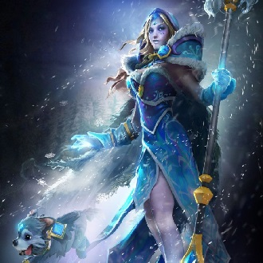
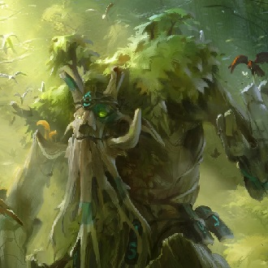
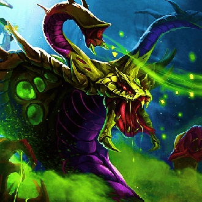
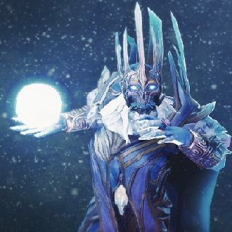
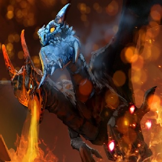

-
Rylai
Descrição
Rylai, conhecida como Crystal Maiden, nascida numa região de clima temperado e educada com a sua escaldante irmã mais velha Lina, depressa descobriu que a sua inata afinidade elementar para o gelo criava sarilhos para todos à sua volta. Nascentes e rios de montanha congelavam em momentos se ela parava ao pé deles para descansar; colheitas que estavam a amadurecer eram arrasadas pela geada e pomares cheios de frutos tornavam-se em labirintos de gelo, acabando por se arruinar, estragados. Quando os seus pais exasperados enviaram Lina para o equador, Rylai encontrou-se exilada na região fria e nortenha de Icewrack, onde foi abrigada por um Feiticeiro de Gelo que tinha esculpido para si próprio um eremitério no ponto mais alto do Glaciar Blueheart. Após um longo período de estudos, o feiticeiro declarou que ela estava pronta para praticar sozinha e deixou-a tomar o seu lugar, descendo para o glaciar para hibernar durante um milhar de anos. O seu controlo das Artes do Gelo apenas tem aumentado desde então, e agora as suas habilidades são inigualáveis.
-
Treant
Descrição
No oeste longínquo, nas montanhas para lá do Vale de Augury, jazem os restos de um poder antigo, uma fonte de energia sobrenatural, protegida nas profundezas da floresta densa. Reza a lenda que os seres que crescem aqui, crescem de uma forma invulgar. Para as forças da natureza, este é um local sagrado, criado para permanecer escondido e desconhecido de tudo e de todos. Muitas são as armadilhas e perigos que protegem esta terra: plantas que tudo consomem, fauna híbrida mortífera e flores venenosas. Mas nada aqui é tão feroz como os treants protetores. Estes seres intemporais e gigantescos, encarregados de manter a paz nesta terra perigosa, garantem que ninguém de dentro saia sem motivo e que ninguém do exterior descubra os seus segredos. Desde o início dos tempos eles cuidam das suas terras sagradas, sem serem interrompidos, apenas vagamente conscientes das mudanças ocorrentes no mundo exterior. Mas inevitavelmente, a atenção que esse mundo exterior dava a esta terra selvagem cresceu com a passagem de cada inverno, assim como a sua audácia. E pouco tempo depois chegaram os invasores, com as suas ferramentas que cortam e as suas chamas que queimam, e frequentemente os treants ponderavam: quem são estas criaturas frágeis e industriosas? O que aconteceu ao mundo verde e selvagem? Assim chegou e começou uma era de dúvidas e perguntas, mil verões de longas tradições reconsideradas, enquanto cada vez mais os forasteiros morriam e alimentavam a sua terra. Quando tudo o que florescia tinha finalmente manifestado a sua opinião, a curiosidade superou a cautela. Foi decidido: um protetor solitário seria enviado para o mundo exterior, com a ordem de vaguear até os glaciares subirem uma vez mais, para observar a terra em mudança e as suas criaturas, e descobrir que perigos desconhecidos poderiam ameaçar o seu solo sagrado.
-
Venomancer
Descrição
Nas Selvas Ácidas da Ilha Jidi, o veneno corre nas veias e borbulha nas entranhas de cada criatura que corre, trepa ou salta por entre as lianas fluorescentes que gotejam com seiva cáustica. Porém, mesmo neste grupo de animais tóxicos, Venomancer é conhecido por ser o mais venenoso. Muitos anos atrás, um herbalista chamado Lesale atravessou a Baía de Fradj num pequeno barco, procurando por essências potentes que pudessem ser extraídas de cascas e raízes, mas em vez disso encontrou uma transformação horrível. Duas léguas adentro da selva de Jidi, Lesale encontrou um réptil cuja camuflagem o fez passar por uma planta epífita, que o picou quando o tentou arrancar por engano. Em desespero, ele usou o seu conhecimento parcial da rica flora da selva, misturando o veneno do (rapidamente estrangulado) réptil com o néctar de uma orquídea blindada, para criar um antídoto. Nos momentos antes de uma paralisia negra o tomar por completo, injetou-se com o espinho da orquídea, caindo instantaneamente em coma. Dezassete anos depois, alguma coisa se agitou no lugar onde tinha caído, atirando para fora os montes de húmus que se tinham acumulado no local durante esses anos todos: Venomancer. Lesale, o Herbalista, não mais - mas sim Lesale, o Mortífero. A sua mente tinha sido apagada e a sua carne tinha sido consumida e substituída por um novo tipo de matéria - uma matéria que fundia o veneno do réptil com o tegumento venenoso da orquídea. As Selvas Ácidas de Jidi ficaram a conhecer um novo mestre, um perante o qual até os mais nefastos predadores aprenderam a fazer uma vénia ou a escavar um buraco e fugir pelas suas vidas. A lúgubre ilha provou ser demasiado confinante, e alguma fome por humanos bem dentro do coração do Venomancer conduziu Lesale à procura de novos venenos... e vítimas.
-
Lina
Descrição
As rivalidades fraternas entre Lina e a sua irmã mais nova Rylai, a Crystal Maiden, foram o tema de lendas na região de clima temperado onde passaram a sua conflituosa infância juntas. No entanto, Lina sempre teve a vantagem, pois Crystal era inocente e ingénua mas Lina era inteligente e conivente. Os seus pais, desesperados com as suas filhas incompatíveis, passaram por meia dúzia de herdades, perdendo uma para o fogo e a seguinte para o gelo, até finalmente perceberem que a vida seria mais simples se as crianças fossem separadas. Sendo a mais velha, Lina foi enviada para o sul longínquo para viver com uma tia paciente no deserto de Misrule, um clima que provou ser mais do que confortável para a filha incandescente. A sua chegada causou furor nos pacatos locais, e mais de um candidato a pretendente queimou os dedos ou foi embora com as sobrancelhas chamuscadas, com os seus avanços rejeitados. Lina é orgulhosa e confiante, e nada consegue apagar a sua chama.
-
Lich
Descrição
Durante a vida, o feiticeiro do frio Ethreain (muito antes de ser um Lich) tinha usado a ameaça de gelo destrutivo para escravizar reinos inteiros. Os seus súbditos, ajudados por alguns mágicos desesperados, ganharam a coragem suficiente para o emboscarem. Armados com a quantidade de corda encantada suficiente para o prenderem para sempre, amarraram o feiticeiro do frio a pesos robustos e atiraram-no para uma lagoa que se pensava não ter fundo. Porém, tinha. Ele apenas caiu durante mais ou menos um ano antes de ter finalmente pousado num afloramento. Aí ficou durante muito tempo, morto mas sem se decompor, até que o geomante Anhil considerou investigar a lenda da Lagoa Negra, supostamente sem fundo. O fio de prumo de Anhil entrelaçou-se nas cordas que prendiam o feiticeiro afogado e acabou por pescar um prémio inesperado. Pensando então que, ao tornar o morto não-morto, pudesse questioná-lo sobre as propriedades da lagoa, removeu as cordas e começou um ritual simples de ressurreição. Até os descendentes dos inimigos de Ethreain estavam bem esquecidos pelo tempo, portanto não havia ninguém para avisar Anhil contra tal imprudência. Mas ele aprendeu quase instantaneamente o erro da sua decisão, assim que o Lich retirou as suas algemas e o consumiu.
-
Jakiro
Descrição
Até entre as feras mágicas, um dragão de duas cabeças é uma aberração. Metade gelo, metade fogo, parte astúcia e parte raiva, a criatura conhecida como Jakiro paira sobre campos de batalha queimados e congelados, assolando todos que tentem enfrentá-lo. As ninhadas dos dragões Pyrexae contêm sempre duas crias. Famosos pela sua perversidade até nos primeiros momentos de vida, dragões recém-nascidos desta espécie irão tentar matar o seu irmão mesmo quando estão ainda no ninho. Só o mais forte sobrevive. Deste modo, o vigor da linhagem Pyrexae é assegurado. Por algum acidente da natureza, a aberração Jakiro nasceu de um único ovo, combinando num só indivíduo a gama completa de habilidades encontradas nas diversas espécies de Pyrexae. Presos na couraça do seu corpo monstruoso, os poderes do gelo e do fogo combinam-se, e agora nenhum inimigo está a salvo.